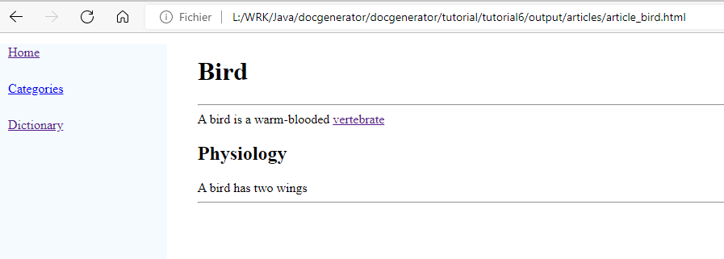

Home
Categories
Dictionary
Download
Project Details
Changes Log
What Links Here
How To
Syntax
FAQ
License
API basic tutorial
1 Creation of the project
1.1 Project dependencies
1.2 Coding the main class
2 Creation of the API
3 Add a text in the index
4 Add two articles
4.1 Create the two articles
4.2 Add links between the second article and the first
4.3 Add a title in the first article
4.4 Add a table in the first article
5 Html result
6 See also
1.1 Project dependencies
1.2 Coding the main class
2 Creation of the API
3 Add a text in the index
4 Add two articles
4.1 Create the two articles
4.2 Add links between the second article and the first
4.3 Add a title in the first article
4.4 Add a table in the first article
5 Html result
6 See also
This article is a tutorial explaining how to use the generator in another Java application. You will:
- Create a Netbeans project to select a directory for the Wiki
- Create two articles through the API
- Generate the html wiki through the API
Creation of the project
Project dependencies
We will create a simple Netbeans project with a dependency to the two following jar files:- The
docGenerator.jar, which is distributed in thedocGenerator-bin-<version>.zipfile - The
docGeneratorAPI.jar, which is distributed in thedocGenerator-api-<version>.zipfile
Coding the main class
Our project will only contain one main class, with a file chooser allowing the select the directory where to generate the wiki:package apigeneration; import java.io.File; import javax.swing.JFileChooser; public class APIGeneration { private DocGeneratorAPI api = null; public APIGeneration() { } public void generate(File directory) { } public static void main(String[] args) { JFileChooser chooser = new JFileChooser(new File(System.getProperty("user.dir"))); chooser.setDialogTitle("Select the output directory"); chooser.setDialogType(JFileChooser.OPEN_DIALOG); chooser.setFileSelectionMode(JFileChooser.DIRECTORIES_ONLY); if (chooser.showOpenDialog(null) == JFileChooser.APPROVE_OPTION) { APIGeneration generation = new APIGeneration(); generation.generate(chooser.getSelectedFile()); } } }For the moment the generator does not do anything. When we run the application, a file chooser appear and we can choose the directory where to generate the wiki. But nothing more happens and the application exits.
Creation of the API
We will update theFile directory method to create the API, and generate the html result:package apigeneration; import java.io.File; import javax.swing.JFileChooser; public class APIGeneration { private DocGeneratorAPI api = null; public APIGeneration() { } public void generate(File directory) { api = new DocGeneratorAPI(); api.createModel(); api.setOutputDirectory(directory); // generate the wiki (the output directory existing content will be cleaned prior to the generation) api.writeContent(true); } }This code won't compile because the
writeContent method can throw a DocGeneratorAPIException exception. We modify the class to properly catch this exception:package apigeneration; import java.io.File; import javax.swing.JFileChooser; public class APIGeneration { private DocGeneratorAPI api = null; public APIGeneration() { } public void generate(File directory) throws DocGeneratorAPIException { api = new DocGeneratorAPI(); api.createModel(); api.setOutputDirectory(directory); // generate the wiki (the output directory existing content will be cleaned prior to the generation) api.writeContent(true); } public static void main(String[] args) { JFileChooser chooser = new JFileChooser(new File(System.getProperty("user.dir"))); chooser.setDialogTitle("Select the output directory"); chooser.setDialogType(JFileChooser.OPEN_DIALOG); chooser.setFileSelectionMode(JFileChooser.DIRECTORIES_ONLY); if (chooser.showOpenDialog(null) == JFileChooser.APPROVE_OPTION) { APIGeneration generation = new APIGeneration(); try { generation.generate(chooser.getSelectedFile()); } catch (DocGeneratorAPIException e) { e.printStackTrace(); } } } }
Add a text in the index
We will add the simple text "This is a wiki about animals" in the index of the wiki:api.addSentence(api.getIndex(), "This is a wiki about animals");The full code of the method becomes:
public void generate(File directory) throws DocGeneratorAPIException { api = new DocGeneratorAPI(); api.createModel(); api.setOutputDirectory(directory); // generate the wiki (the output directory existing content will be cleaned prior to the generation) api.writeContent(true); api.addSentence(api.getIndex(), "This is a wiki about animals"); // generate the wiki (the output directory existing content will be cleaned prior to the generation) api.writeContent(true); }
Add two articles
Create the two articles
We will create an article about birds and another about vertebrates:public void generate(File directory) throws DocGeneratorAPIException { api = new DocGeneratorAPI(); api.createModel(); api.setOutputDirectory(directory); // generate the wiki (the output directory existing content will be cleaned prior to the generation) api.writeContent(true); api.addSentence(api.getIndex(), "This is a wiki about animals"); // create an article about birds XMLArticle birdArticle = api.createArticle("Bird"); // create an article about vertebrates XMLArticle vertebrateArticle = api.createArticle("Vertebrate"); // generate the wiki (the output directory existing content will be cleaned prior to the generation) api.writeContent(true); }
Add links between the second article and the first
We create a reference between the "Bird" and the "Vertebrate" article. As the second article is not created yet, the link will use the id of the article:public void generate(File directory) throws DocGeneratorAPIException { // create an article about birds XMLArticle birdArticle = api.createArticle("Bird"); api.addSentence(birdArticle, "A bird is a warm-blooded "); api.addReference(birdArticle, "vertebrate"); // create an article about vertebrates XMLArticle vertebrateArticle = api.createArticle("Vertebrate"); }Now we create a reference between the "Vertebrate" and the "Bird" article:
public void generate(File directory) throws DocGeneratorAPIException { // create an article about birds XMLArticle birdArticle = api.createArticle("Bird"); api.addSentence(birdArticle, "A bird is a warm-blooded "); api.addReference(birdArticle, "vertebrate"); // create an article about vertebrates XMLArticle vertebrateArticle = api.createArticle("Vertebrate"); api.addSentence(vertebrateArticle, "A vertebrate is a mammal who has vertebrae. An example of vertebrate is a "); api.addReference(vertebrateArticle, birdArticle); }
Add a title in the first article
Now we add a title in the first article:public void generate(File directory) throws DocGeneratorAPIException { // create an article about birds XMLArticle birdArticle = api.createArticle("Bird"); api.addSentence(birdArticle, "A bird is a warm-blooded "); api.addReference(birdArticle, "vertebrate"); api.addTitle(birdArticle, "Physiology"); api.addSentence(birdArticle, "A bird has two wings"); // create an article about vertebrates XMLArticle vertebrateArticle = api.createArticle("Vertebrate"); api.addSentence(vertebrateArticle, "A vertebrate is a mammal who has vertebrae. An example of vertebrate is a "); api.addReference(vertebrateArticle, birdArticle); }
Add a table in the first article
Now we add a new title and a table in the first article:public void generate(File directory) throws DocGeneratorAPIException { // create an article about birds XMLArticle birdArticle = api.createArticle("Bird"); api.addSentence(birdArticle, "A bird is a warm-blooded "); api.addReference(birdArticle, "vertebrate"); api.addTitle(birdArticle, "Physiology"); api.addSentence(birdArticle, "A bird has two wings"); api.addTitle(birdArticle, "List of birds"); // add a new title XMLTable table = api.addTable(birdArticle); // add a table table.setWidth(20, true); // set the width of the table a 20% of the width of the page table.setAlignment(Alignment.LEFT); // align the table to the left table.setCaption("List of birds"); // set the table caption api.addTableColumn(table, "Classification"); // add only one column to the table, and set its name XMLTableRow row = api.addTableRow(table); // add a first row api.addTableCell(row, "Pigeon"); // add one cell to the row row = api.addTableRow(table); // add a second row api.addTableCell(row, "Crow"); row = api.addTableRow(table); // add a third row api.addTableCell(row, "Eagle"); // create an article about vertebrates XMLArticle vertebrateArticle = api.createArticle("Vertebrate"); api.addSentence(vertebrateArticle, "A vertebrate is a mammal who has vertebrae. An example of vertebrate is a "); api.addReference(vertebrateArticle, birdArticle); }
Html result
The application generates the full wiki. For example, the "Bird" article has the following html content:
See also
- DocJGenerator API: This article presents an overview of the docJGenerator API
×

Categories: Tutorials